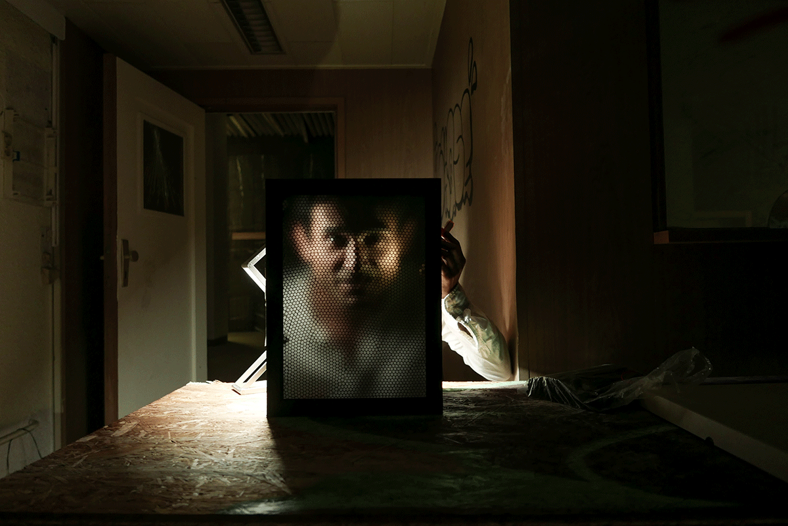
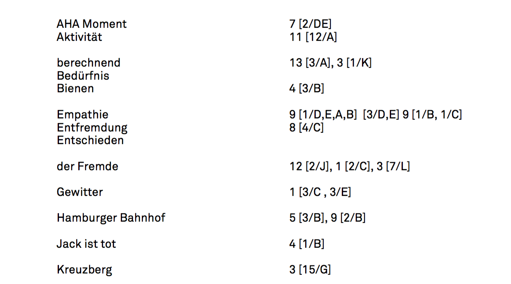
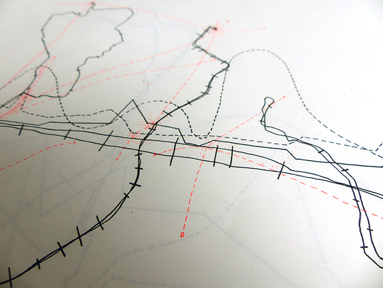
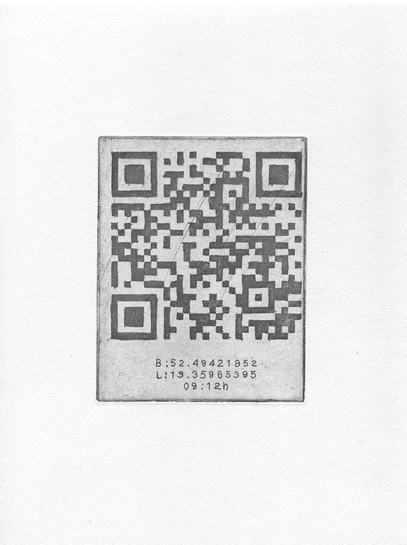
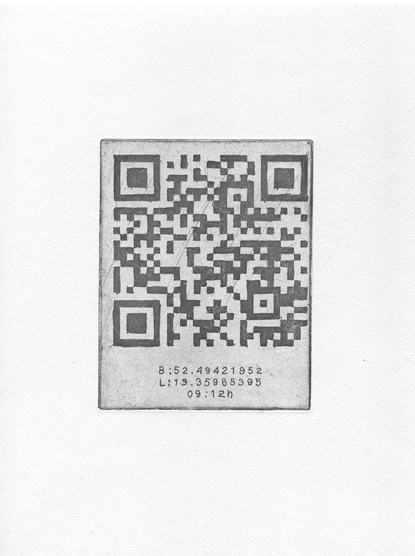
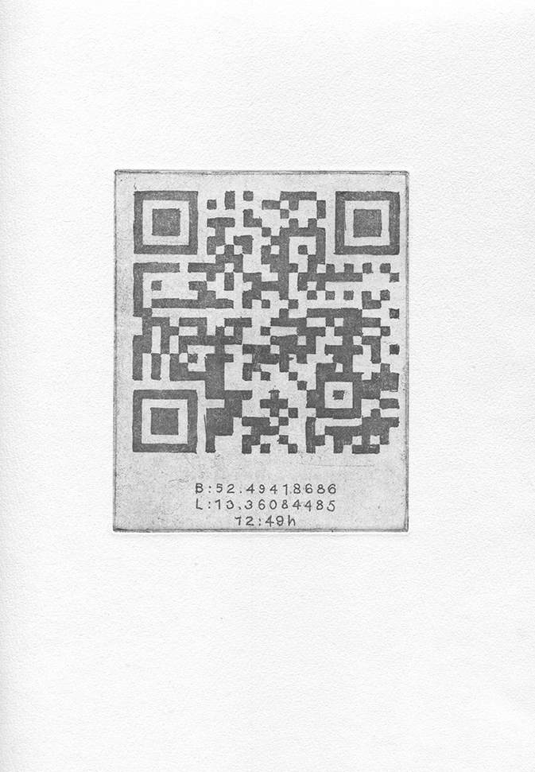
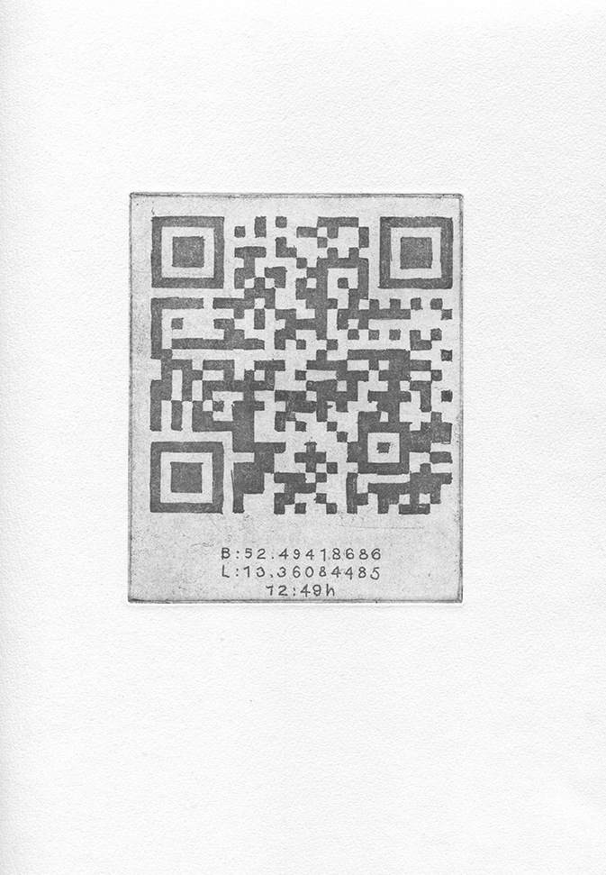
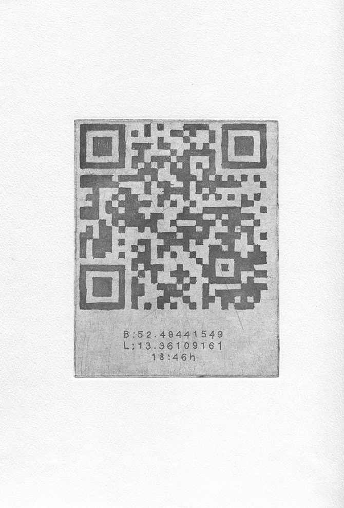
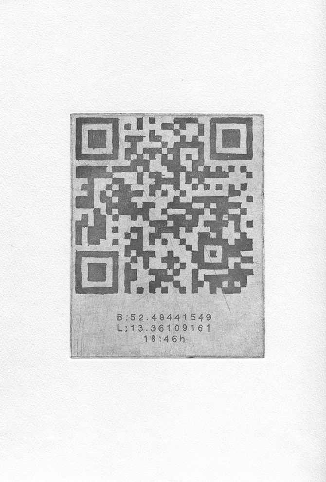

Der Atlas fremdbestimmter Lebenszeit ist eine Sammlung, die vierzehn im Risographie-Verfahren gedruckte Kartierungen umfasst. In den „psychogeografischen“ Karten sind Raum, Zeitlichkeit und die Intensität des Erlebens miteinander verschränkt. Ein darüber gelagertes System aus Breiten- und Längengraden kann von Betrachter*innen decodiert werden und mit Hilfe eines Glossars schriftlichen Protokollen meines Erlebens zugeordnet werden.
Die Karten sind im Rahmen des Selbstexperimentes 14 Tage fremdbestimmt entstanden, in dem ein Fremder zwei Wochen die absolute Kontrolle über meine Lebenszeit inne hatte. Jeden Tag bekam ich einen Tagesplan zugeschickt, führte diesen aus und lebte eingezwängt in einem Zeitkorsett aus Zwang und Kontrolle.
Kann ich von „meiner“ Zeit sprechen, wenn ich täglich von Fremden vorgeplante Aktionen ausführe – einen Handlungsmarathon abarbeite? Dieser und verwandten Fragestellungen kann im Atlas fremdbestimmter Lebenszeit nachgegangen werden.
 Ausschnitt Kartierung Tag 2, Risographieprint, überlagerte Skizze
Ausschnitt Kartierung Tag 2, Risographieprint, überlagerte Skizze
 Ausschnitt Kartierung Tag 9, Risographieprint
Das Handbuch zur Überwindung der Zeit
zeigt die Auseinandersetzung mit der Echtzeit individuellen Erlebens und ihrer medialen Repräsentation.
Zeit, als eine Grunddeterminante des Lebens, wird im Handbuch zur Überwindung der Zeit in ihrer Komplexität vergegenwärtigt. Jede*r Leser*in kann im Laufe der Lektüre ihre besondere Art und Weise der Zeitüberwindung zu fassen bekommen – und sei es nur für einen Augenblick.
Das Handbuch zur Überwindung der Zeit ist ein Hand gebundenes Unikat – ein künsterisches Sammelsurium. Arbeiten, die zum Thema Zeitwahrnehmung entstanden sind werden visualisiert, diskutiert und reflektiert.
Zum Anfassen, Aufschlagen, Durchblättern und Eintauchen: Das Handbuch zur Überwindung der Zeit ist eine Einbuchbibliothek – Da es 2018 in die Sammlung der Herzogin Anna Amalia Bibliothek in Weimar übergegangen ist, kann es von nun an dort im Sonderlesesaal des historischen Gebäudes gelesen werden.
 Ausstellungsansicht, Kunsthalle am Hamburger Platz Berlin Weißensee
Ausstellungsansicht, Kunsthalle am Hamburger Platz Berlin Weißensee
 Ausstellungsansicht, Kühlhaus Berlin
Ausstellungsansicht, Kühlhaus Berlin
Es gibt diesen Moment zwischen Schlafen und Wachen. Diesen Moment, an den man sich objektiv erinnern kann. Man liegt im Bett und wacht auf: das beißende Weckergeräusch, das Bewusstwerden, das Weichen des Traumes. Kann man diese mentale Situation konservieren, um sie noch einmal hervorzurufen?
Aufwachen ist das Ende und der Anfang
Aufwachen ist ein Zwischenstadium
Aufwachen ist ein Übergang
Ich kann im Nachhinein den kompletten Moment wiederherstellen: Wenn ich die Zeichnungen sehe und meine selbst gesprochenen Worte höre, verkoppeln sich diese nachträglichen Ausdrucksformen zu einem neuen Eindruck und führen in die sinnliche Erinnerung des kurzen Augenblicks vom Übergang in das Tagesbewusstsein zurück. Ich erlebe die Farben wieder, die Bewegungen, den fast noch traumhaften Kontext des Augenblicks, als der Traum schon im Verschwinden begriffen war und das Tagesbewusstsein langsam auftauchte - als ob durch hingehauchte, halbwach geflüsterte Worte und nachträgliche Zeichnungen mein inneres Auge wieder farbig sehen könnte und innere Fühler wüchsen, um den untergegangenen Traumfetzen wieder zu verlebendigen.


 

 

 

Durch die mir auferlegte Zeitbegrenzung, habe ich keine Zeit mir zu überlegen was genau ich skizzieren möchte. Ich skizziere frei aus der Hand: schnell, spontan, selektiv. Die Repräsentanz der Kreuzungsumrundung zeigt sich auf meiner Skizze, die das direkt Wahrgenommene ganzheitlich zum Ausdruck bringt.Die Unmittelbarkeit des ikonographischen Notierens, in derselben Zeiteinheit wie die Handlung kurz davor, fixiert den mentalen Zustand in der Situation in der Skizze.
 Ausstellungsansicht Workshop Sinnesausflug // L40, Verein zur Förderung von Kunst und Kultur am Rosa-Luxemburg-Platz e.V.
Ausstellungsansicht Workshop Sinnesausflug // L40, Verein zur Förderung von Kunst und Kultur am Rosa-Luxemburg-Platz e.V.
 Ausstellungsansicht Workshop Sinnesausflug // L40, Verein zur Förderung von Kunst und Kultur am Rosa-Luxemburg-Platz e.V.
Ausstellungsansicht Workshop Sinnesausflug // L40, Verein zur Förderung von Kunst und Kultur am Rosa-Luxemburg-Platz e.V.
 Bleistift auf Papier / 2:07 min
Bleistift auf Papier / 2:07 min
 Bleistift auf Papier / 3:00 min
Bleistift auf Papier / 3:00 min
 Höhlendorfworkshop in der Werkstatt der Initiative Haus der Statistik
Höhlendorfworkshop in der Werkstatt der Initiative Haus der Statistik
 Außenansicht, Blick in den alten Fahrradladen
Außenansicht, Blick in den alten Fahrradladen
In meiner künstlerischen Arbeit setze ich mich mit Lebenszeit im Spannungsfeld von Autonomie und Abhängigkeit auseinander. In meiner Studio practice erstelle ich Sammlungen, in denen Konzepte von Zeitlichkeit verhandelt werden. Der mediale Fokus liegt auf Zeichnung und Druckgrafik.
Wie fühlt es sich an, Zeit unter „selbst verschuldeter Fremdbestimmung“ zu überwinden? Und wie kann die unter diesen Umständen verbrachte Intensität der Lebenszeit gezeichnet, notiert, konserviert werden? Der Großteil meiner Arbeiten entsteht während künstlerischer Selbstexperimente. In performativen Experimenten begebe ich mich in selbst auferlegte Zeitstrukturen, in denen das eigene Handeln und der freie Wille eingeschränkt sind. Der Fokus solcher Selbstversuche liegt bewusst und radikal auf der eigenen Empfindung. Es entstehen Collagen aus Zeichnungen, Diagrammen und Textfragmenten.
Seit 2012 initiiere ich Kunstprojekte und leite Workshops mit Kindern und Erwachsenen. Aktuell Moabees – ein PilotInnenprojekt am ZK/U Berlin und PFUSCH! Pfusch am Bau – Kunst am Bau in der ZUsammenKUNFT.
* 1986 Bonn
Seit 2015 // PhD. Kandidatin, freie Kunst, Bauhaus Universität Weimar 2013 // Master of Arts, forschende Kunst im öffentlichen Kontext, Kunsthochschule Berlin Weißensee 2011 // Bachelor of Science, Architektur, TU Berlin
seit 2012 // Vorsitzende Kunst Werk Stadt Berlin e.V.
2017 - 2018 // NACHT / gefördert vom Berliner Projektfonds Kulturelle Bildung
2017 // CO-founder Tiny Penthaus / Projektraum / im Rahmen des Initiativenzusammenschlusses ZUsammenKUNFT / Pilotprojekt Initiative Haus der Statistik in Berlin Kreuzberg
2016 // CO-founder Penthaus für schöne Formate / Risographiewerkstatt und Druckstudio in Berlin Neukölln
2016 - 2017 // Kunstpostamt / gefördert vom Bundesministerium für Bildung und Forschung (BKJ)
2013 - 2020 // Moabees – ein Pilotinnenprojekt am ZK/U Berlin / gefördert vom Bundesministerium für Bildung und Forschung (BKJ)
2012 - 2013 // Bienenbewegung / gefördert vom Berliner Projektfonds Kulturelle Bildung
2019 // DRUCK DRUCK DRUCK // Kuratiert von Nina Prader und John Z. Komurki /
Galerie im Körnerpark Berlin
2019 // Lecture / Tiny Data – failure & utopia /
10th SAR International Conference on Artistic Research
Zurich University of the Arts
2019 // Manifest of Practice / Bauhaus 100 / Thüringer Staatskanzlei, Berlin
2018 // Lange Nacht der Bilder / Alte Gießerei Berlin
2018 // Lecture / Bauhaus Universität Weimar / [dis]solving boundaries – Young Bauhaus Research Conference
2018 // The Vivid Unknown / Kunstraum rosalux Berlin
2017 // Die Kapelle und das spezifische Gewicht der Zeit / kuratiert von Anne Brannys / ehem. Kapelle im Stadtschloss Weimar
2016 // Künstlerinnengruppe Moabees / HONIGKINO #3 / ZK/U Berlin
2015 // AREYOUTHERE? / L40, Verein zur Förderung von Kunst und Kultur am Rosa-Luxemburg-Platz e.V.
2014 // IMAGO / Galerie Zwitschermaschine, Berlin (solo)
2014 // REIF / Kühlhaus Berlin
2014 // TI:ME / Salon am Moritzplatz Berlin / kuratiert von Mari Poller
2013 // Lecture / HANDBUCH ZUR ÜBERWINDUNG DER ZEIT / Kunsthalle am Hamburger Platz, Berlin Weißensee
2013 // 7LOCOMOTION / Kunsthalle am Hamburger Platz, Berlin Weißensee
2012 // MONHABITE EINE EXPEDITION/ ZK/U (Zentrum für Kunst und Urbanistik, Berlin)
2011 // Lecture / IBA LABOR Kunst Stadt, Hamburg / mit dem Club der internationalen Raumforscher Berlin
Penthaus für schöne Formate Kunst Werk Stadt Berlin e.V. Moabees – ein PilotInnenprojekt Bienenbewegung Bienengärtchen POG Artikel in der Zeitschrift Kultur bildet
Impressum
Katja Marie Voigt
c/o openBerlin / KWSB e.V.
Boddinstraße 12
12053 Berlin
info(at)katjamarievoigt,com
© Katja Marie Voigt 2016
All rights reserved
Inhaltlich Verantwortlicher gemäß P. 55 Abs. 2 RStV:
Katja Marie Voigt, Berlin
Haftungsausschluss Die Haftung für fremde oder von dritter Seite übermittelter oder bereitgestellter Informationen wird ausgeschlossen. Eine Haftung des Plattformbetreibers kann erst ab dem Zeitpunkt begründet werden, ab welchem Kenntnis von den rechtswidrigen Inhalten besteht. In diesem Fall werden die rechtsverletzenden Inhalte umgehend entfernt. Die hier gestaltete Internetpräsenz beinhaltet Links zu Webseiten Dritter. Auf den Inhalt dieser, von Dritter Seite betriebener Webseite hat der Plattformbetreiber keinen Einfluss. Eine Haftung ist daher ausgeschlossen. Es ist stets der jeweilige Betreiber der Webseite für die von diesem veröffentlichten Inhalte verantwortlich. Verlinkte Seiten wurden zum Zeitpunkt der Verlinkung auf mögliche Rechtsverstöße überprüft. Rechtswidrige Inhalte waren dabei nicht erkennbar. Bei bekanntwerden von Rechtsverletzungen werden die entsprechenden Inhalte umgehend entfernt. Disclaimer The liability for third party or third party transmitted / provided information is excluded. The liability of the platform operator can only be justified from the time at which it is aware of the unlawful content. In this case, the content that infringes the law will be removed immediately. This website includes outgoing links to third party websites. The platform operator has no influence on the content of the websites operated by third parties. Liability for these contents is therefore excluded. It is always the respective operator of the website who is responsible for the content, which is published on its website. Linked pages were checked for possible infringements at the time of applying the link. Unlawful contents were not identifiable. In the case of legal violations, the relevant content will be removed immediately. Datenschutzbestimmungen: Erhebung, Verarbeitung und Nutzung personenbezogener Daten Sie können unsere Webseite besuchen, ohne Angaben zu ihrer Person oder ihrem Unternehmen zu machen. Es werden insofern lediglich Zugriffsdaten ohne Personenbezug gespeichert. Diese daten werden ausschließlich zur Verbesserung des Angebots ausgewertet und erlauben keinen Rückschluss auf ihre Person bzw. Ihr Unternehmen. Personenbezogene bzw. unternehmensbezogenen Daten werden ausschließlich dann erhoben, sofern sie uns diese im Rahmen einer Kontaktaufnahme über das auf dem Portal ausgewiesene Kontaktformular freiwillig mitteilen. Die in diesem Zusammenhang gespeicherten Daten können insbesondere Name des Unternehmens, Vor- und Zunamen von Ansprechpartner, Vor- und Zunahme des gesetzlichen Vertreters des Unternehmens, Anschrift, E-mail-Adressen und Telefonnummern sowie Zahlungsdaten umfassen. Zur Speicherung dieser Daten willigen sie insofern ein. Die vorbezeichneten Daten werden ohne ihre gesonderte Einwilligung ausschließlich verwendet, um ihre Anfrage abzuwickeln. Mit vollständiger Abwicklung der Anfrage werden ihre Daten für die weitere Verwendung gesperrt und nach Ablauf der steuer- und handelsrechtlichen Vorschriften gelöscht, sofern sie nicht ausdrücklich in die weitere Nutzung ihrer daten eingewilligt haben. Privacy Policy: collection, processing and use of personal data You can visit our website without giving any information about your person or your company. Insofar only access data without personal reference is stored. These data are evaluated solely to improve the offer and do not allow any conclusion on your person or your company. Personal or company-related data is only collected if you voluntarily provide us with this information within the scope of contact via the contact form shown on the portal. The data stored in this context may include, in particular, the name of the company, the names and names of the contacts, the legal representative of the company, address, e-mail addresses and telephone numbers as well as payment details. You agree to the storage of this data.The aforementioned data will only be used to process your request without your separate consent. Once the request has been fully processed, your data will be blocked for further use and deleted after the tax and commercial regulations have expired, unless you have expressly consented to the further use of your data.